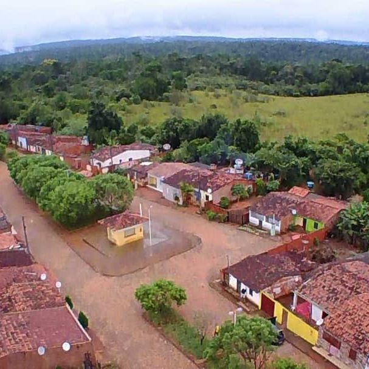
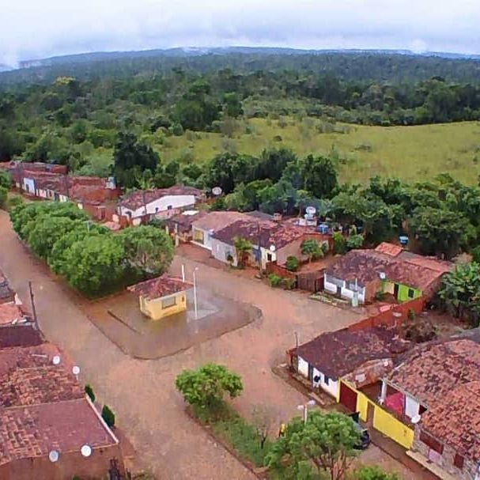

Algumas coisa
localizado em uma regia de boa vejetacao e relevo favoraveis, tendo carcteristicas do planalto.
para mais assece o menu em cima
 abrir no google mapslocalizado em uma regia de boa vejetacao e relevo favoraveis, tendo carcteristicas do planalto.
para mais assece o menu em cima
 abrir no google maps